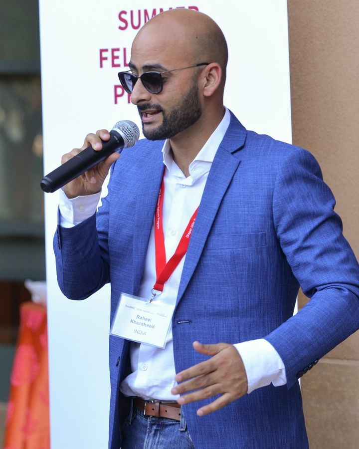

Now2026
Writing and building at the intersection of AI and information
Trust in new technology is earned, not assumed. That was true for Twitter during elections and disasters, and it is the central question for AI now.
AI Content Systems · News · Platforms
For twenty years I have worked on the layer where people meet information. First reporting the news from Delhi and Kashmir, then building how it moves at Twitter, Snap and Change.org, and now building with AI. I write about how AI is reshaping trust, information and the public sphere.

Three chapters, one thread: getting reliable information to the people who need it.
2019 – 2026
Trust in new technology is earned, not assumed. That was true for Twitter during elections and disasters, and it is the central question for AI now.
Built victoryplusnews.com, a data-first newsroom running on AI-assisted content systems, with a team across Canada, Poland and India. Led partnerships with Snap, Meta and TikTok.
Took an AI-powered streaming platform from idea to 50+ people, $6.8M raised and $5M in revenue, launching six streaming services for 10M+ viewers.
Acquired by APMC · 2024Co-founded an AI and social sciences firm and oversaw a custom insight-parsing language model, delivering research for clients including the World Bank.
2012 – 2019
Snap's first in-market employee in India, leading its entry into the market.
Worked on micropayments for news at Harvard and studied adaptive leadership at Yale, where I co-taught a seminar on fake news.
Employee #4 in the region. Built #TwitterSeva, a live grievance system used by the Prime Minister's Office and 21 ministries to resolve over a million citizen complaints a month. Ran disaster-response efforts through floods in Kashmir, Assam and Chennai and the Nepal earthquake.
Field producer on the series' first season.
Primetime Emmy nominationEmployee #4 in India. Grew the user base from 5,000 to 1.5 million in 18 months and led the platform's largest global campaign at the time.
2006 – 2011
Led a UK FCO-funded leadership project that trained 60 young journalists and convened 10,000+ young Kashmiris at the One Young Kashmir summit.
Ran the Kashmir bureau, reporting on security, civil unrest and politics from the region I grew up in.
Started in national television news, covering the Ministry of External Affairs and Delhi's crime and court beats.
Coverage, interviews and talks from 2014 to today. Every link opens the original source.
“We are always organizing data at Twitter. It just seemed to me to be the most obvious thing to do.”
Fellowships and honours for work on news, technology and democratic participation.